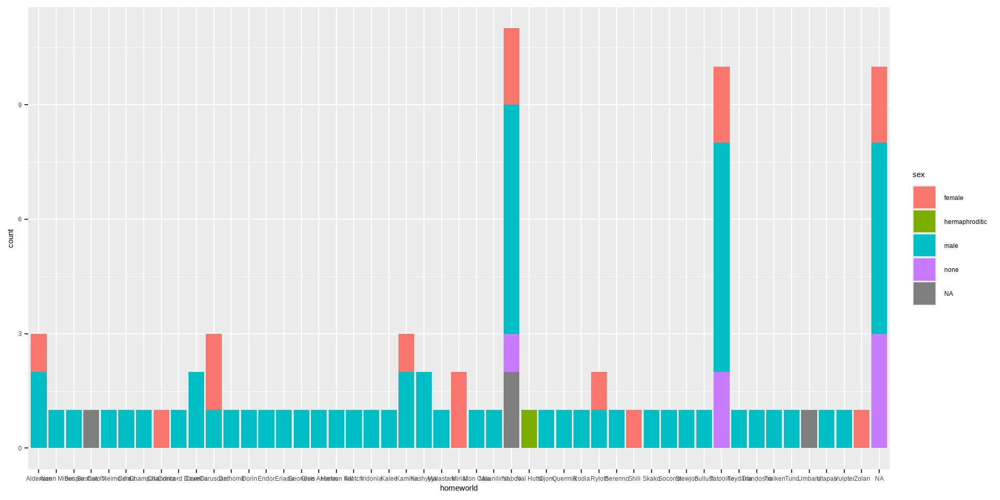

Data Wrangling
Tidy data
Characteristics of tidy data
- Each variable forms a column.
- Each observation forms a row.
- Each type of observational unit forms a table.
Grammar of data wrangling
A grammar of data wrangling…
… based on the concepts of functions as verbs that manipulate data frames
select: pick columns by namearrange: reorder rowsfilter: pick rows matching criteriadistinct: filter for unique rowsmutate: add new variablessummariseorsummarize: agreggation of valuesgroup_by: for grouped operations- … (many more)
Rules of dplyr functions
- First argument is always a data frame
- Subsequent arguments say what to do with that data frame
- Always return a data frame
- Don’t modify in place
First look: Variables
Second look: Overview
Rows: 87
Columns: 14
$ name <chr> "Luke Skywalker", "C-3PO", "R2-D2", "Dart…
$ height <int> 172, 167, 96, 202, 150, 178, 165, 97, 183…
$ mass <dbl> 77, 75, 32, 136, 49, 120, 75, 32, 84, 77,…
$ hair_color <chr> "blond", NA, NA, "none", "brown", "brown,…
$ skin_color <chr> "fair", "gold", "white, blue", "white", "…
$ eye_color <chr> "blue", "yellow", "red", "yellow", "brown…
$ birth_year <dbl> 19.0, 112.0, 33.0, 41.9, 19.0, 52.0, 47.0…
$ sex <chr> "male", "none", "none", "male", "female",…
$ gender <chr> "masculine", "masculine", "masculine", "m…
$ homeworld <chr> "Tatooine", "Tatooine", "Naboo", "Tatooin…
$ species <chr> "Human", "Droid", "Droid", "Human", "Huma…
$ films <list> <"A New Hope", "The Empire Strikes Back"…
$ vehicles <list> <"Snowspeeder", "Imperial Speeder Bike">…
$ starships <list> <"X-wing", "Imperial shuttle">, <>, <>, …Select a single column
View only homeworld
Select a single column
View only homeworld
- Start with the function (a verb):
select() - First argument: data frame we’re working with ,
starwars
Select a single column
View only homeworld
- Start with the function (a verb):
select() - First argument: data frame we’re working with ,
starwars - Second argument: variable we want to select,
homeworld
Select a single column
View only homeworld
- Start with the function (a verb):
select() - First argument: data frame we’re working with ,
starwars - Second argument: variable we want to select,
homeworld - Result: data frame with 87 rows and 1 column
💡Tip!
dplyr functions always expect a data frame and always yield a data frame
Select multiple
- Can select more than one variable
# A tibble: 87 × 2
name homeworld
<chr> <chr>
1 Luke Skywalker Tatooine
2 C-3PO Tatooine
3 R2-D2 Naboo
4 Darth Vader Tatooine
5 Leia Organa Alderaan
6 Owen Lars Tatooine
7 Beru Whitesun Lars Tatooine
8 R5-D4 Tatooine
9 Biggs Darklighter Tatooine
10 Obi-Wan Kenobi Stewjon
# ℹ 77 more rows💡Tip!
the order you specify your variables in select() is the order they appear in the output dataset
Working with data in R
Objects
- R is an object oriented programming language
- Everything is an object (datasets, arrays, lists, globals, etc.)
- Can have multiple datasets, arrays, etc. in your environment
- When creating, editing, manipulating data you must first reference the data/object of interest
Workflow
Say we want to narrow our dataset to only see the name and homeworld variables and sort the data by homeworld
Select
# A tibble: 87 × 2
name homeworld
<chr> <chr>
1 Luke Skywalker Tatooine
2 C-3PO Tatooine
3 R2-D2 Naboo
4 Darth Vader Tatooine
5 Leia Organa Alderaan
6 Owen Lars Tatooine
7 Beru Whitesun Lars Tatooine
8 R5-D4 Tatooine
9 Biggs Darklighter Tatooine
10 Obi-Wan Kenobi Stewjon
# ℹ 77 more rowsSelect, then arrange
# A tibble: 87 × 2
name homeworld
<chr> <chr>
1 Leia Organa Alderaan
2 Bail Prestor Organa Alderaan
3 Raymus Antilles Alderaan
4 Ratts Tyerel Aleen Minor
5 Lobot Bespin
6 Jek Tono Porkins Bestine IV
7 Nute Gunray Cato Neimoidia
8 Ki-Adi-Mundi Cerea
9 Mas Amedda Champala
10 Mon Mothma Chandrila
# ℹ 77 more rowsPipes
In programming, a pipe is a technique for passing information from one process to another.
- Start with the data frame
starwars, and pass it to theselect()function,
Pipes
In programming, a pipe is a technique for passing information from one process to another.
- Start with the data frame
starwars, and pass it to theselect()function, - then we select the variables
nameandhomeland,
Pipes
In programming, a pipe is a technique for passing information from one process to another.
- Start with the data frame
starwars, and pass it to theselect()function, - then we select the variables
nameandhomeland, - and then we arrange the data frame by
homeland
# A tibble: 87 × 2
name homeworld
<chr> <chr>
1 Leia Organa Alderaan
2 Bail Prestor Organa Alderaan
3 Raymus Antilles Alderaan
4 Ratts Tyerel Aleen Minor
5 Lobot Bespin
6 Jek Tono Porkins Bestine IV
7 Nute Gunray Cato Neimoidia
8 Ki-Adi-Mundi Cerea
9 Mas Amedda Champala
10 Mon Mothma Chandrila
# ℹ 77 more rowsHow does a pipe work?
- You can think about the following sequence of actions - find keys, unlock car, start car, drive to work, park.
- Expressed as a set of nested functions in R pseudocode this would look like:
Aside
The pipe operator is implemented in the package magrittr, though we don’t need to load this package explicitly since tidyverse does this for us.

The Treachery of Images
René Magritte

A note on piping and layering
%>%used mainly in dplyr pipelines, we pipe the output of the previous line of code as the first input of the next line of code+used in ggplot2 plots is used for “layering”, we create the plot in layers, separated by+
dplyr
❌
✅
ggplot2
❌
Error in `geom_bar()`:
! `mapping` must be created by `aes()`.
ℹ Did you use `%>%` or `|>` instead of `+`?✅
Code styling
Many of the styling principles are consistent across %>% and +:
- always a space before
- always a line break after (for pipelines with more than 2 lines)
❌
✅